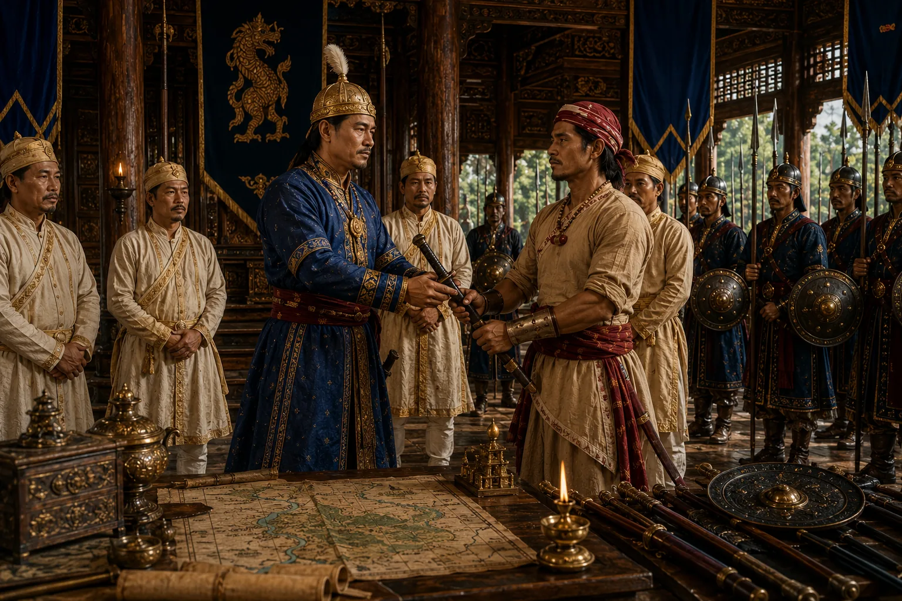

Lachit Tested and Appointed Supreme Commander
1667 · Against the Mughal Empire

Chakradhwaj tests Lachit's presence of mind with a staged court insult; impressed by his fierce dignity, the king confers the golden sword and supreme command of the army to liberate Guwahati.
Sources have not yet been catalogued for this record.
People: Chakradhwaj Singha (Supangmung), Lachit Borphukan
Open this scene in the interactive archive · Follow this event on MAP